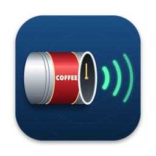

Coffee Can Radar RTI · DTI · SARRange vs. time intensity (newest at top)
Processing…
IF input
Last triggered pulse: sync (blue) / IF (orange)
PGA phase error
Rising-edge zoom: samples ● and interpolation